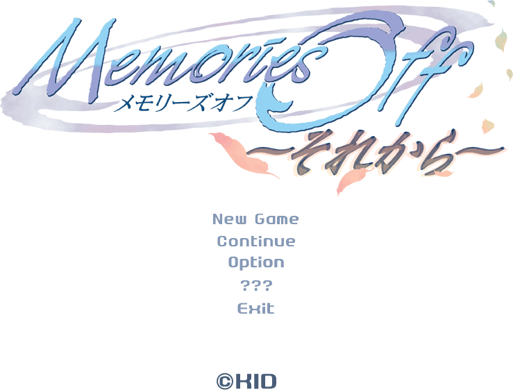
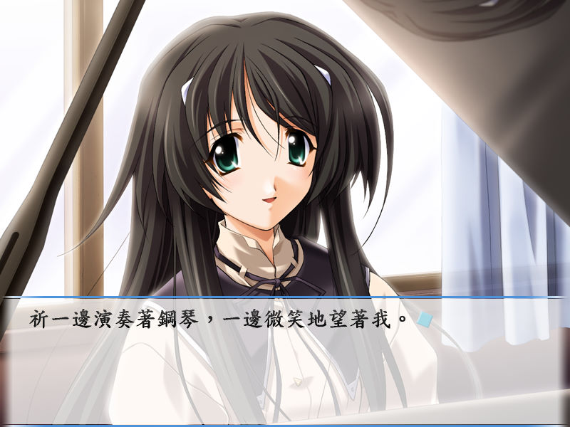

名稱：秋之回憶4／秋之回憶3nd：從今以後 (Memories Off: And Then，中文版)
簡介：KID 2004年出品的戀愛劇情故事遊戲，2005年由光譜中文化並代理發行。本遊戲嚴格
來說應為第四代，但光譜標示為第三代，至於原版名稱則無標示，使得第三代所屬的
問題變得模糊不清、眾說紛紜 [待補]。


保護：光碟StarForce 3.04
備註：進入遊戲後，若文字顯示為亂碼，可按滑鼠右鍵更改顯示字體來解決。
備註：離開遊戲後，遊戲程式可能未實際結束，最好啟動工作管理員進行確認。
檔案：MO4_Patch.rar = 1.0.0.1更新檔（更新後無法使用1.0.0.0免光碟檔）
nocd1000.rar = 1.0.0.0免光碟檔（執行檔會被報毒，請自行斟酌）